Справочник по Angular и React · модуль 3 · несколько экранов, публикация, расписание
3.4
GitHub Actions: конвейер и расписание
В этой главе монитор начинает проверять сайты. Скрипт на Node.js открывает каждый адрес из sites.json и записывает результат в results.json, а приложение показывает, какие сайты работают. Второй конвейер GitHub Actions запускает скрипт каждую ночь, сохраняет результаты коммитом от имени бота и публикует сайт заново. По пути разобраны две ошибки на настоящих запусках: боту не хватает права записи в репозиторий, а коммит бота не запускает публикацию.
- Категория
- GitHub Actions, расписание
- Уровень
- Начальный
- Что понадобится
- Проект и репозиторий
monitoringпосле главы 3.3, сайт на GitHub Pages - Результат
- Конвейер
check.yml: каждую ночь в 00:00 по Москве проверка сайтов, коммитresults.jsonи новая публикация
§1Скрипт проверки сайтов
РазбираемсяЧто значит «проверить сайт»
Проверка сайта — запрос по его адресу и ответ сервера. Код ответа 200 значит, что страница отдана; 404 — страницы по адресу нет; если сервер не ответил за отведённое время, кода нет совсем. Вместе с кодом удобно записать время ответа в миллисекундах.
Такой запрос выполняет функция fetch из главы 1.7, но здесь она работает не в браузере, а в Node.js: скрипт запускается командой node в терминале, без страницы и без React. Скрипту нужно прочитать sites.json, проверить сайты по очереди и дописать результат в начало файла results.json. Файл хранит историю последних 30 проверок.
ДелаемПишем и запускаем скрипт
- Создайте скрипт
Откройте папку
monitoringв VS Code. В корне проекта создайте папкуscripts, в ней — файлcheck.mjs.monitoring/scripts/check.mjs import { readFile, writeFile } from 'node:fs/promises' const SITES = 'public/data/sites.json' const RESULTS = 'public/data/results.json' const sites = JSON.parse(await readFile(SITES, 'utf8')) let history = [] try { history = JSON.parse(await readFile(RESULTS, 'utf8')).history } catch { // Первый запуск: файла с результатами ещё нет. } const checks = [] for (const site of sites) { const check = { id: site.id, ok: false, status: 0, ms: 0, error: '' } const start = Date.now() try { const response = await fetch(site.url, { signal: AbortSignal.timeout(15000) }) check.status = response.status check.ok = response.ok } catch (e) { check.error = e.message } check.ms = Date.now() - start console.log(`${check.ok ? 'OK ' : 'FAIL'} ${check.status} ${check.ms} мс ${site.url}`) checks.push(check) } history = [{ time: new Date().toISOString(), checks }, ...history].slice(0, 30) await writeFile(RESULTS, JSON.stringify({ history }, null, 2) + '\n')
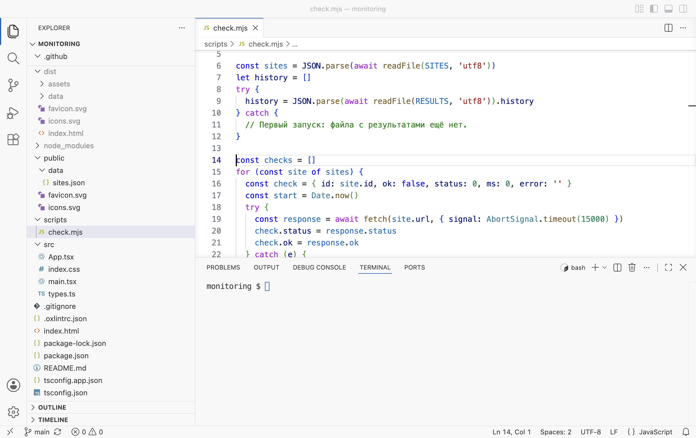
scripts/check.mjs - Запустите проверку
Выполните в терминале VS Code команду.
Терминал · папка monitoring node scripts/check.mjs
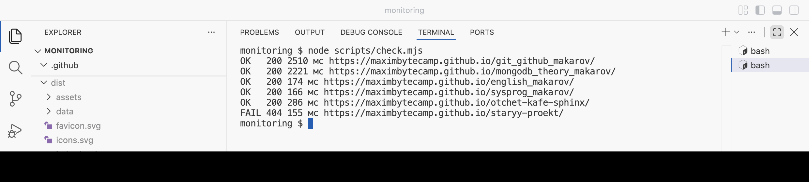
Пять сайтов отвечают 200, «Старый проект» — 404 - Откройте результаты
В папке
public/dataпоявился файлresults.json. Откройте его.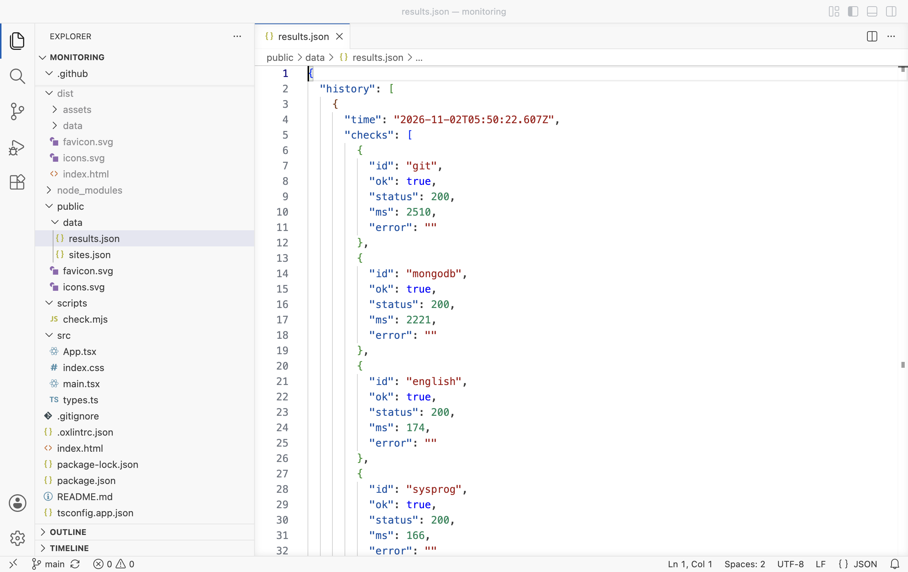
results.json: одна проверка в истории
РазбираемсяЧто делает скрипт
import { readFile, writeFile } from 'node:fs/promises' 1 const SITES = 'public/data/sites.json' const RESULTS = 'public/data/results.json' const sites = JSON.parse(await readFile(SITES, 'utf8')) 2 let history = [] try { history = JSON.parse(await readFile(RESULTS, 'utf8')).history 3 } catch { // Первый запуск: файла с результатами ещё нет. } const checks = [] for (const site of sites) { const check = { id: site.id, ok: false, status: 0, ms: 0, error: '' } const start = Date.now() try { const response = await fetch(site.url, { signal: AbortSignal.timeout(15000) }) 4 check.status = response.status check.ok = response.ok } catch (e) { check.error = e.message 5 } check.ms = Date.now() - start console.log(`${check.ok ? 'OK ' : 'FAIL'} ${check.status} ${check.ms} мс ${site.url}`) checks.push(check) } history = [{ time: new Date().toISOString(), checks }, ...history].slice(0, 30) 6 await writeFile(RESULTS, JSON.stringify({ history }, null, 2) + '\n') 7
- 1
Модуль
node:fs/promisesвходит в Node.js и работает с файлами:readFileчитает файл,writeFileзаписывает. Расширение.mjsразрешает в Node.jsimportиawaitвне функции. - 2
Пути отсчитываются от папки, в которой запущен
node, — от корня проекта.JSON.parseпревращает текст файла в массив объектов. - 3
Прошлые проверки. При первом запуске файла нет,
readFileвыбрасывает ошибку, и пустой блокcatchоставляет историю пустой. - 4
AbortSignal.timeout(15000)прерывает запрос через 15 секунд. Без него зависший сайт задержал бы всю проверку. - 5
Сюда попадают сетевые ошибки и прерывание по времени: ответа нет, код остаётся
0, текст ошибки сохраняется вerror. При коде 404fetchошибку не выбрасывает: ответ получен, иresponse.okравенfalse. - 6
Новая проверка — в начало массива,
slice(0, 30)оставляет 30 последних. Время записывается функциейtoISOString()во всемирном времени UTC — букваZв конце строки. - 7
JSON.stringify(…, null, 2)записывает JSON с отступом в два пробела, чтобы файл читался и изменения в нём были видны в истории Git.
Результаты лежат в public/data рядом со списком сайтов. Приложение может загрузить их так же, как sites.json.
§2Статусы в приложении
ДелаемПоказываем результат последней проверки
- Дополните типы
Замените содержимое
src/types.ts: добавлены результат проверки одного сайтаCheckи проверка всех сайтовRun.monitoring/src/types.ts export type Site = { id: string name: string url: string } export type Check = { id: string ok: boolean status: number ms: number error: string } export type Run = { time: string checks: Check[] }
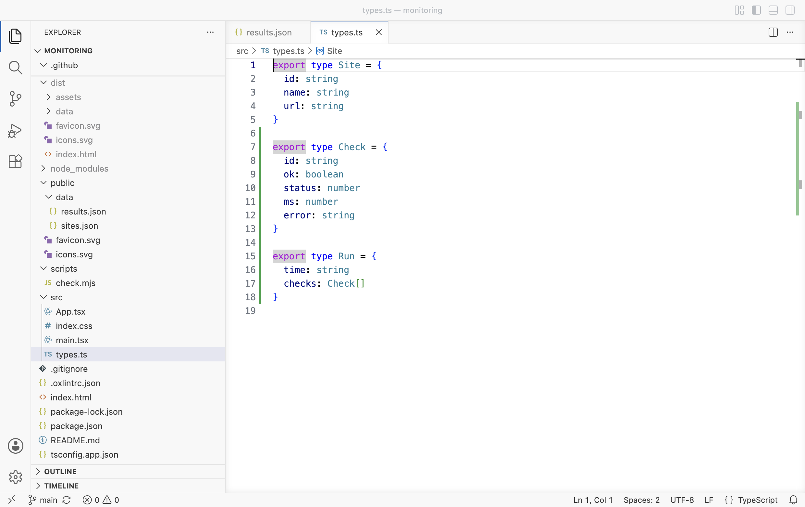
Типы Check и Run - Замените App.tsx
Замените содержимое
src/App.tsx.monitoring/src/App.tsx import { useEffect, useState } from 'react' import type { Check, Run, Site } from './types' async function loadJson(name: string) { const response = await fetch(`${import.meta.env.BASE_URL}data/${name}`) if (!response.ok) { throw new Error(`Файл ${name} не загрузился: код ${response.status}.`) } return response.json() } function statusText(check: Check | undefined) { if (check === undefined) { return 'Не проверялся' } if (check.ok) { return `Работает · ${check.ms} мс` } return `Не открывается · ${check.status || check.error}` } function App() { const [sites, setSites] = useState<Site[]>([]) const [history, setHistory] = useState<Run[]>([]) const [error, setError] = useState('') useEffect(() => { let ignore = false async function load() { try { const list: Site[] = await loadJson('sites.json') const results: { history: Run[] } = await loadJson('results.json') if (!ignore) { setSites(list) setHistory(results.history) } } catch (e) { if (!ignore) { setError((e as Error).message) } } } load() return () => { ignore = true } }, []) const last = history[0] return ( <> <header className="header"> <h1>Мониторинг сайтов группы</h1> <p> {last === undefined ? 'Проверок ещё не было' : `Последняя проверка: ${new Date(last.time).toLocaleString('ru')}`} </p> </header> <main className="main"> {error !== '' && <p className="load-error">{error}</p>} <ul className="sites"> {sites.map((site) => { const check = last?.checks.find((c) => c.id === site.id) return ( <li key={site.id} className={check?.ok ? 'site' : 'site site--bad'}> <span className="site__status">{statusText(check)}</span> <h2>{site.name}</h2> <a href={site.url} target="_blank" rel="noreferrer"> {site.url} </a> </li> ) })} </ul> </main> </> ) } export default App
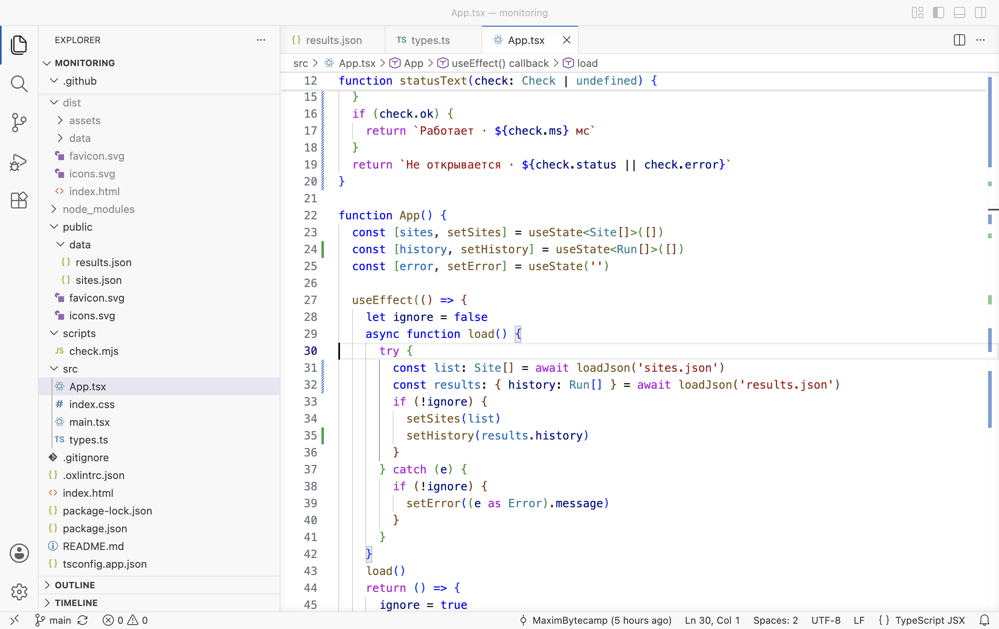
App загружает два файла - Добавьте стили
Вставьте правила в конец
src/index.css: зелёная или красная полоса слева от карточки и строка статуса.monitoring/src/index.css · в конец файла .site { border-left: 6px solid #2e9d5b; } .site--bad { border-left-color: #d23b3b; } .site__status { display: block; margin-bottom: 6px; color: #2e9d5b; font-size: 13px; font-weight: 600; } .site--bad .site__status { color: #d23b3b; }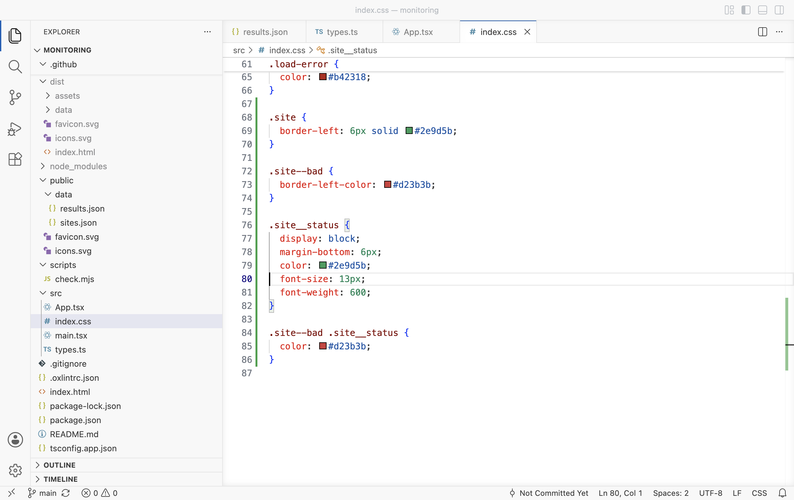
Стили статусов - Проверьте приложение
Запустите
npm run devи откройте адресlocalhost:5173/monitoring/: после главы 3.3 у приложения подпапкаbaseи в режиме разработки. В шапке — время проверки, у «Старого проекта» красная полоса и «Не открывается · 404».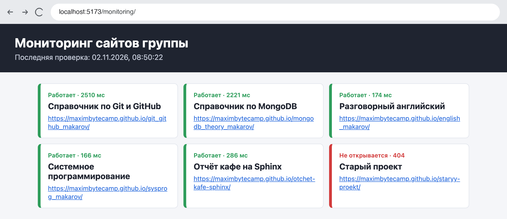
Статусы сайтов из results.json
РазбираемсяНовое в App.tsx
async function loadJson(name: string) { 1 const response = await fetch(`${import.meta.env.BASE_URL}data/${name}`) if (!response.ok) { throw new Error(`Файл ${name} не загрузился: код ${response.status}.`) } return response.json() 2 } function statusText(check: Check | undefined) { 3 if (check === undefined) { return 'Не проверялся' } if (check.ok) { return `Работает · ${check.ms} мс` } return `Не открывается · ${check.status || check.error}` 4 }
- 1
Два файла загружаются одинаково, поэтому запрос вынесен в функцию
loadJsonвне компонента. Имя файла передаётся параметром. - 2
Функция возвращает разобранный JSON. Тип у результата
response.json()не задан, поэтому в строках 31–32 тип указан у переменной:const list: Site[],const results: { history: Run[] }. - 3
statusText— текст статуса по результату проверки. ТипCheck | undefined: результата может не быть, если сайт добавили в список после последней проверки. - 4
Оператор
||берёт первое непустое значение: код ответа, а если он0— текст ошибки.
{sites.map((site) => {
const check = last?.checks.find((c) => c.id === site.id) 1
return (
<li key={site.id} className={check?.ok ? 'site' : 'site site--bad'}> 2
<span className="site__status">{statusText(check)}</span>- 1
last— первый элемент истории, последняя по времени проверка (строка 49). Если истории нет,lastравенundefined, и записьlast?.checksвозвращаетundefinedвместо ошибки: знак?.читает поле, только если слева неundefinedи неnull.findищет результат этого сайта поid. - 2
Класс карточки зависит от результата:
site— зелёная полоса,site site--bad— красная.
Время в шапке выводит new Date(last.time).toLocaleString('ru'): строка UTC из файла превращается в дату и записывается по-русски во времени компьютера. В results.json — 05:50:22Z, на странице в Москве — 08:50:22.
Проверка запущена вручную на вашем компьютере. Чтобы она шла каждую ночь без вас, её запускает GitHub Actions.
§3Конвейер по расписанию
ДелаемКонвейер ночной проверки
- Создайте конвейер
В папке
.github/workflowsсоздайте файлcheck.yml. Это первая версия: в разделах §4 и §5 она будет дополнена.monitoring/.github/workflows/check.yml · первая версия name: Ночная проверка сайтов on: schedule: - cron: '0 21 * * *' workflow_dispatch: jobs: check: runs-on: ubuntu-latest steps: - name: Получить код uses: actions/checkout@v7 - name: Установить Node.js uses: actions/setup-node@v7 with: node-version: 24 - name: Проверить сайты run: node scripts/check.mjs - name: Сохранить результаты в репозиторий run: | git config user.name "github-actions[bot]" git config user.email "41898282+github-actions[bot]@users.noreply.github.com" git add public/data/results.json git commit -m "Результаты ночной проверки" git push
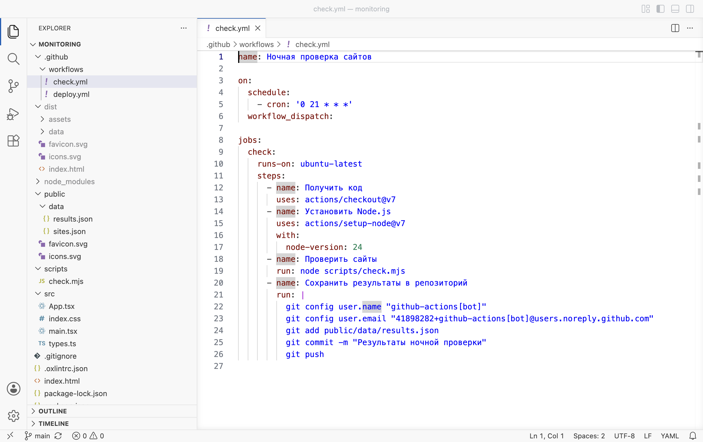
check.yml, первая версия - Отправьте изменения
Скрипт, результаты, приложение и конвейер отправляются одним коммитом.
Терминал · папка monitoring git add . git commit -m "Ночная проверка сайтов" git push
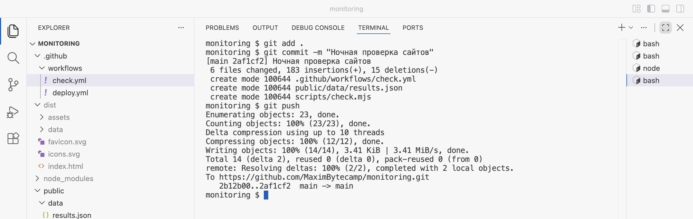
Шесть файлов отправлены - Запустите проверку вручную
До ночи ждать не нужно. На вкладке Actions выберите слева «Ночная проверка сайтов» (1) и нажмите Run workflow (2).
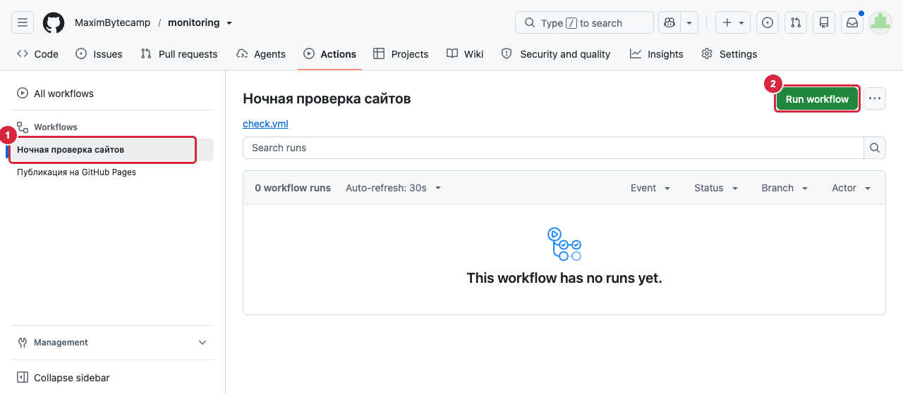
Конвейер ночной проверки на вкладке Actions В открывшемся окне оставьте ветку
mainи нажмите зелёную кнопку Run workflow (3).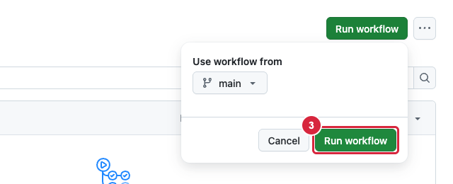
Ручной запуск - Посмотрите результат
Через несколько секунд запуск появится в списке. Откройте его: красный крестик, задание
checkзавершилось ошибкой.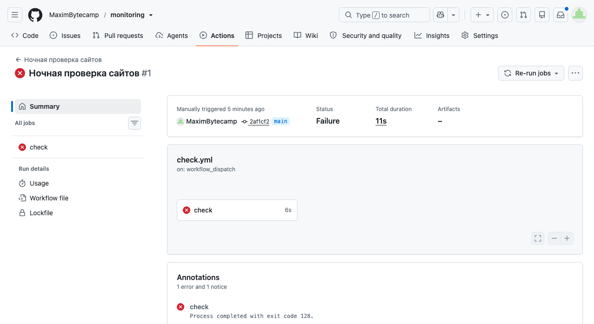
Первый запуск: ошибка Нажмите на задание
check. Упавший шаг «Сохранить результаты в репозиторий» раскрыт.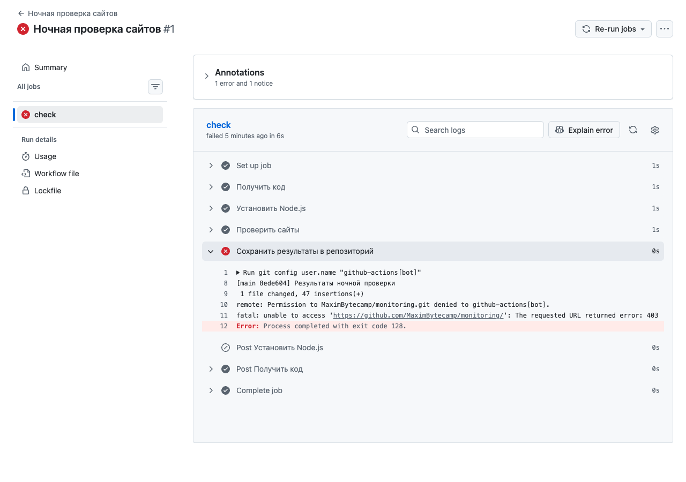
«Permission … denied to github-actions[bot]», код 403
РазбираемсяРасписание и шаги конвейера
name: Ночная проверка сайтов on: schedule: 1 - cron: '0 21 * * *' workflow_dispatch: 2 jobs: check: runs-on: ubuntu-latest steps: - name: Получить код uses: actions/checkout@v7 - name: Установить Node.js uses: actions/setup-node@v7 with: node-version: 24 - name: Проверить сайты run: node scripts/check.mjs - name: Сохранить результаты в репозиторий 3 run: | 4 git config user.name "github-actions[bot]" git config user.email "41898282+github-actions[bot]@users.noreply.github.com" git add public/data/results.json 5 git commit -m "Результаты ночной проверки" git push
- 1
schedule— запуск по расписанию в формате cron. Пять полей через пробел: минута, час, день месяца, месяц, день недели; звёздочка — «любой».0 21 * * *— «каждый день в 21:00». Время в расписании GitHub — всемирное UTC, а Москва живёт по UTC+3, поэтому проверка выполняется в 00:00 по Москве. - 2
workflow_dispatchдобавляет кнопку Run workflow. Без неё первую проверку пришлось бы ждать до ночи. - 3
Скрипт использует только встроенные модули Node.js, поэтому шагов
npm ciи сборки здесь нет. Шаг занял 1 секунду: у машин GitHub быстрый канал. - 4
run: |— несколько команд подряд, каждая на своей строке. Первые две задают имя и почту автора коммита: на машине GitHub их нет.github-actions[bot]и эта почта — стандартные данные бота GitHub Actions; с ними коммит в истории показывается с его значком. - 5
Коммит создан (в журнале «1 file changed»), а отправка отклонена.
Будильник в телефоне ставят один раз, и он звонит каждый день в заданное время, пока его не выключат. Расписание schedule — такой будильник для конвейера, а кнопка Run workflow — проверка, что будильник звонит, не дожидаясь утра.
Будильник звонит минута в минуту. Запуск по расписанию GitHub может начаться позже назначенного времени, когда у GitHub много работы.
У расписания есть ещё два правила из документации GitHub. Расписание читается из ветки по умолчанию — main. В публичном репозитории запуски по расписанию отключаются, если в репозитории 60 дней не было активности; включить их снова можно кнопкой на вкладке Actions.
Скрипт на машине GitHub отработал, но отправить коммит не смог. Ответ — в слове «Permission».
§4Право записи для бота
РазбираемсяЧем ограничен конвейер
Каждому запуску GitHub выдаёт временный ключ GITHUB_TOKEN, и все действия конвейера с репозиторием выполняются по нему: actions/checkout скачивает код, git push отправляет коммит. Права ключа задаёт раздел permissions. В deploy.yml он есть — contents: read, только чтение. В первой версии check.yml раздела нет, и действуют права по умолчанию; для новых репозиториев это тоже только чтение. Отсюда отказ 403.
ДелаемРазрешаем запись и запускаем снова
- Добавьте permissions
В
check.ymlпосле строки 6workflow_dispatch:добавьте раздел прав.check.yml · строки 8–9 permissions: contents: write
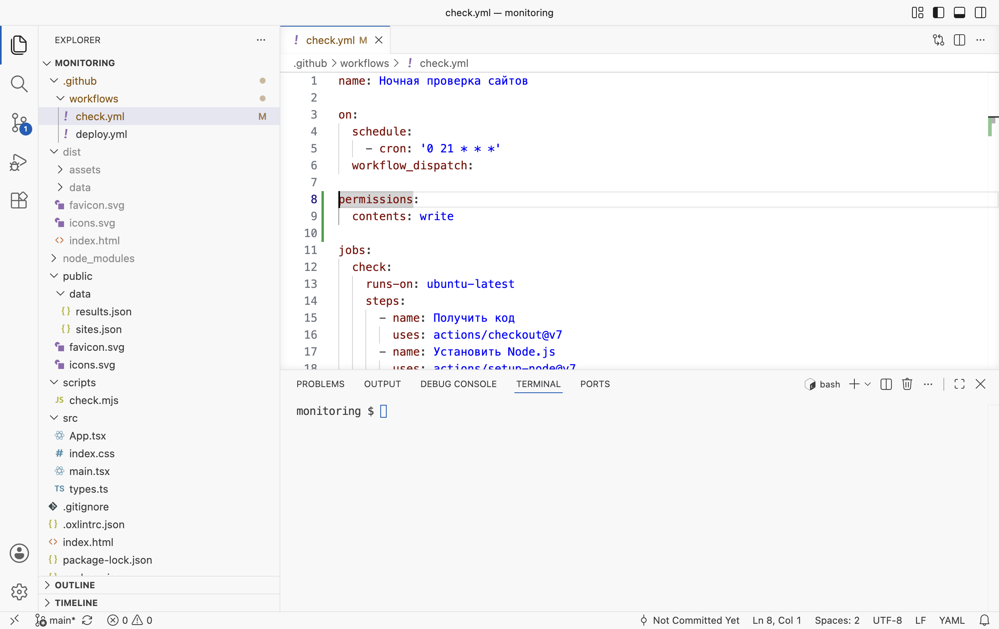
Право записи в репозиторий - Отправьте изменение
Терминал · папка monitoring git add . git commit -m "Право записи для ночной проверки" git push
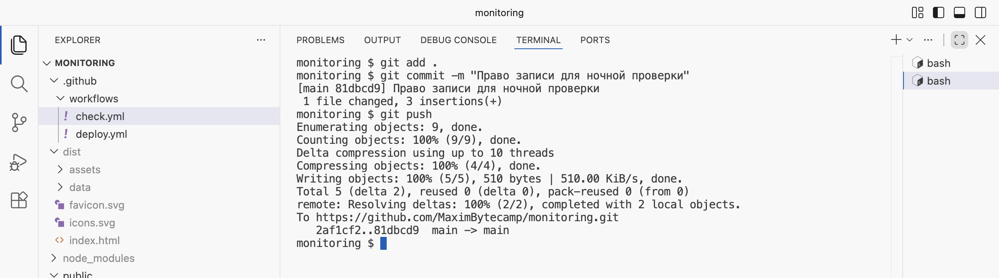
Изменение отправлено - Запустите проверку
На вкладке Actions снова нажмите Run workflow → Run workflow. Запуск №2 завершился зелёной галочкой.
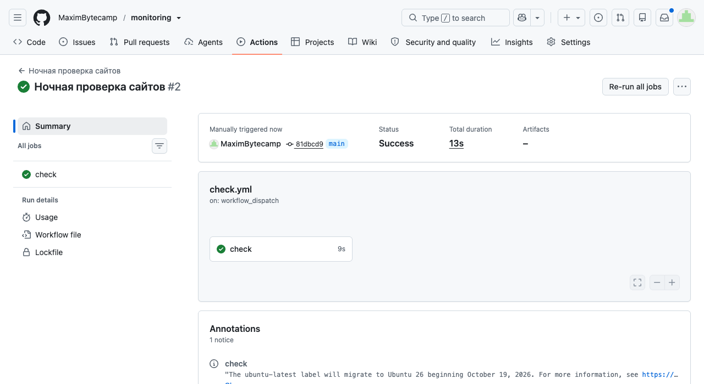
Второй запуск: успех - Посмотрите историю коммитов
На вкладке Code нажмите на число коммитов. Сверху — «Результаты ночной проверки» от
github-actions[bot].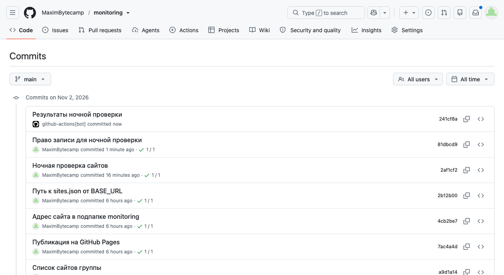
Коммит бота с результатами - Откройте сайт
Откройте
https://<логин>.github.io/monitoring/. В шапке — время проверки с вашего компьютера, 08:50:22. Время запуска на GitHub на сайт не попало.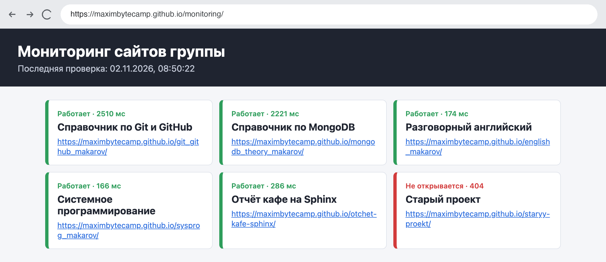
На сайте старые результаты - Посмотрите список запусков
Откройте Actions → All workflows. После ночной проверки №2 публикация не запускалась: последняя «Публикация на GitHub Pages» — по вашему коммиту «Право записи для ночной проверки».
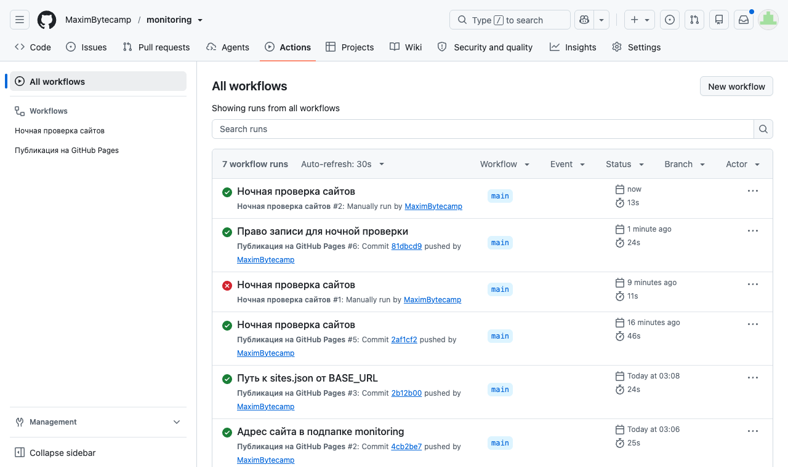
Коммит бота публикацию не запустил
РазбираемсяПочему сайт не обновился
Публикация запускается событием push в ветку main. Коммит бота — тоже отправка в main, но GitHub не запускает конвейеры по событиям, которые создал ключ GITHUB_TOKEN. Так устроено намеренно: иначе конвейер, который делает коммит при каждом push, запускал бы себя повторно без конца. Результаты лежат в репозитории, а dist на Pages собран из предыдущего коммита.
Публикацию нужно запустить из самого конвейера проверки — после того как результаты сохранены.
§5Публикация после проверки
РазбираемсяВызов одного конвейера из другого
Конвейер можно вызвать из другого конвейера как отдельное задание — для этого у вызываемого конвейера должно быть событие workflow_call. Так check.yml после задания check выполнит весь deploy.yml, и шаги публикации не придётся копировать.
ДелаемПодключаем deploy.yml к ночной проверке
- Дополните deploy.yml
Замените содержимое
.github/workflows/deploy.yml. Добавлены событиеworkflow_call(строка 7) и параметрref: mainу шага «Получить код» (строки 27–28).monitoring/.github/workflows/deploy.yml name: Публикация на GitHub Pages on: push: branches: [main] workflow_dispatch: workflow_call: permissions: contents: read pages: write id-token: write concurrency: group: pages cancel-in-progress: false jobs: deploy: runs-on: ubuntu-latest environment: name: github-pages url: ${{ steps.deployment.outputs.page_url }} steps: - name: Получить код uses: actions/checkout@v7 with: ref: main - name: Установить Node.js uses: actions/setup-node@v7 with: node-version: 24 cache: npm - name: Установить зависимости run: npm ci - name: Собрать сайт run: npm run build - name: Упаковать папку dist uses: actions/upload-pages-artifact@v5 with: path: dist - name: Опубликовать id: deployment uses: actions/deploy-pages@v5
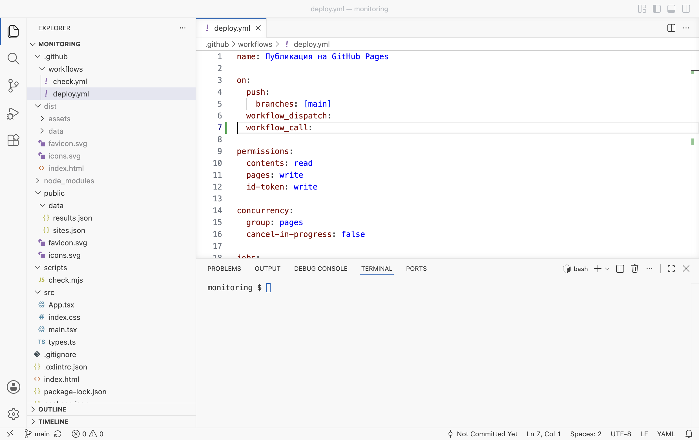
deploy.yml можно вызвать из другого конвейера - Дополните check.yml
Замените содержимое
.github/workflows/check.yml. Добавлены права для публикации и второе заданиеpublish.monitoring/.github/workflows/check.yml name: Ночная проверка сайтов on: schedule: - cron: '0 21 * * *' workflow_dispatch: permissions: contents: write pages: write id-token: write jobs: check: runs-on: ubuntu-latest steps: - name: Получить код uses: actions/checkout@v7 - name: Установить Node.js uses: actions/setup-node@v7 with: node-version: 24 - name: Проверить сайты run: node scripts/check.mjs - name: Сохранить результаты в репозиторий run: | git config user.name "github-actions[bot]" git config user.email "41898282+github-actions[bot]@users.noreply.github.com" git add public/data/results.json git commit -m "Результаты ночной проверки" git push publish: needs: check uses: ./.github/workflows/deploy.yml
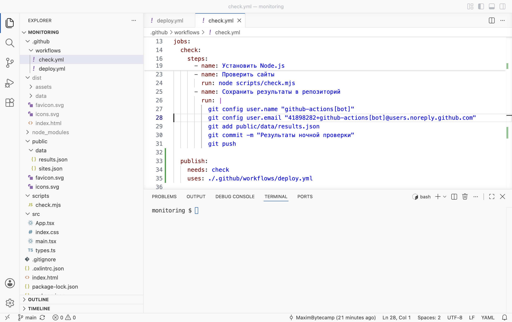
Задание publish вызывает deploy.yml - Заберите коммит бота и отправьте
В репозитории на GitHub теперь есть коммит бота, которого нет у вас. Обычный
git pushбудет отклонён, поэтому сначала выполнитеgit pull.Терминал · папка monitoring git pull git add . git commit -m "Публикация после ночной проверки" git push
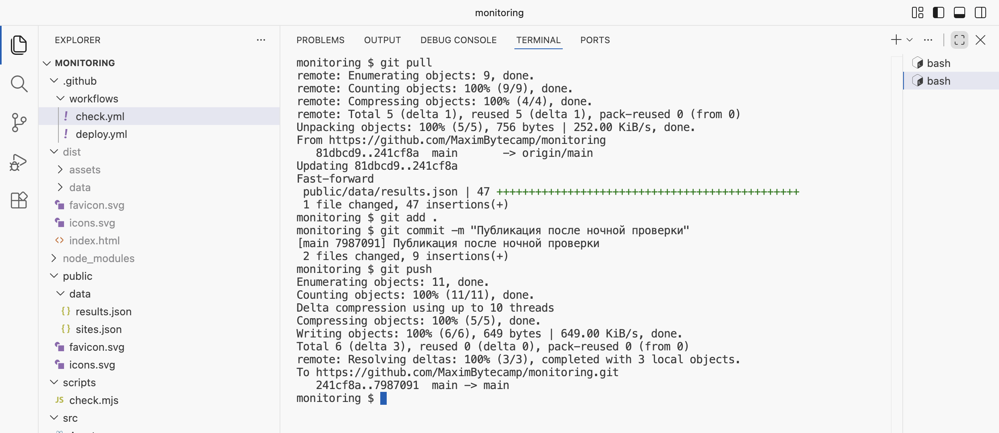
git pull забрал results.json от бота - Запустите проверку
Снова Run workflow → Run workflow и откройте запуск №3. В нём два задания:
checkиpublish / deploy, у второго — адрес сайта.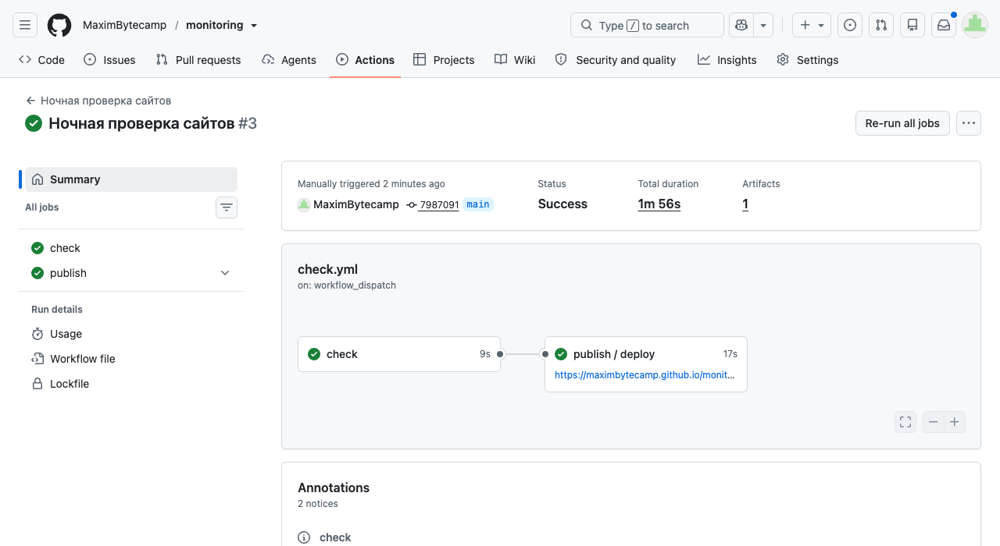
Проверка, затем публикация - Откройте сайт
Обновите страницу сайта. Время в шапке — время запуска на GitHub, 09:08:22.
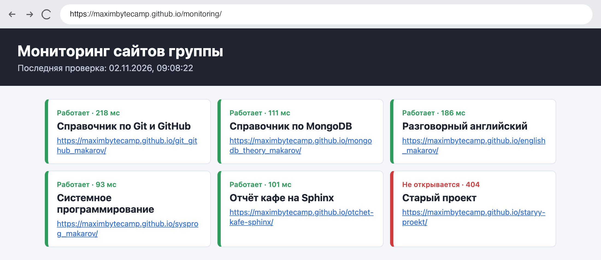
На сайте результаты проверки с GitHub
РазбираемсяКак устроен итоговый конвейер
permissions: contents: write 1 pages: write 2 id-token: write
publish: needs: check 3 uses: ./.github/workflows/deploy.yml 4
- 1
Запись в репозиторий — для коммита с результатами.
- 2
Права для публикации. Вызванный конвейер получает права вызвавшего, поэтому всё, что нужно
deploy.yml, должно быть разрешено и здесь. - 3
needs: check— задание начнётся только после успешногоcheck. Без этого задания выполнялись бы одновременно, и публикация не дождалась бы новых результатов. - 4
usesна уровне задания вызывает другой конвейер из этого же репозитория — путь начинается с./.
ref: main в deploy.yml нужен из-за порядка событий. Вызванный конвейер скачивает код того коммита, с которого начался запуск, — а он был до коммита бота. Без ref публикация собрала бы сайт со старым results.json. С ref: main скачивается последнее состояние ветки — уже с результатами.
Ночной запуск check.yml
Весь путь занял 1 мин 56 с. Дальше он повторяется каждую ночь по расписанию.
После коммитов бота локальная копия отстаёт от GitHub, поэтому работа в репозитории monitoring начинается с git pull. Запускать node scripts/check.mjs на компьютере и отправлять свой results.json больше не нужно: если файл изменён и у вас, и у бота, git pull остановится с конфликтом в этом файле.
Монитор проверяет сайты каждую ночь, но узнать о сломанном сайте можно, только открыв монитор. Автоматизация модуля 3 отправляет сообщение в Telegram, когда сайт не открывается.
§6Частые ошибки
Сообщения получены в репозитории monitoring: в журнале запуска на GitHub и в терминале.
| Что видно | Почему | Что сделать |
|---|---|---|
remote: Permission to <логин>/monitoring.git denied to github-actions[bot]. и The requested URL returned error: 403 | У ключа запуска нет права записи | Добавить в check.yml permissions: contents: write |
| Проверка прошла, коммит бота есть, а сайт показывает старое время | Коммит бота не запускает конвейеры по push | Вызвать deploy.yml заданием publish через workflow_call |
Задание publish есть, но на сайте результаты предыдущей проверки | deploy.yml скачивает коммит до коммита бота | Добавить ref: main в шаг actions/checkout |
| Нет кнопки Run workflow | В on нет workflow_dispatch или конвейер ещё не отправлен в main | Добавить workflow_dispatch: и отправить |
git push на компьютере: ! [rejected] main -> main (fetch first) | На GitHub есть коммит бота, которого нет локально | Выполнить git pull, затем git push |
| Ночью проверка не запустилась | Расписание в UTC; запуск может задержаться; после 60 дней без активности расписание отключается | Пересчитать время: МСК = UTC + 3; проверить вкладку Actions и включить конвейер |
§7Проверьте себя
Чем ответ 404 отличается для скрипта от сайта, который не отвечает?
При 404 сервер ответил: status равен 404, ok — false. Если ответа нет, fetch выбрасывает ошибку, код остаётся 0, а текст ошибки записывается в error.
В какое время по Москве сработает cron: '30 4 * * 1'?
Каждый понедельник в 04:30 UTC, то есть в 07:30 по Москве.
Зачем в check.yml строка workflow_dispatch, если есть расписание?
Она добавляет кнопку Run workflow для запуска вручную — проверить конвейер, не дожидаясь ночи.
Почему первый запуск упал только на шаге git push?
Скачать код и создать коммит можно с правом чтения. Право записи нужно только для отправки, а его у ключа запуска не было.
Почему коммит бота не запустил deploy.yml?
GitHub не запускает конвейеры по событиям, созданным ключом GITHUB_TOKEN, чтобы конвейеры не запускали друг друга без конца.
Что изменится, если убрать needs: check из задания publish?
Задания выполнятся одновременно: публикация может собрать сайт до того, как бот сохранит новые результаты, и опубликуется даже при упавшей проверке.
Шпаргалка
fetch(url, { signal: AbortSignal.timeout(15000) })node scripts/check.mjsschedule: - cron: '0 21 * * *' — 21:00 UTC = 00:00 МСКworkflow_dispatch:permissions: contents: writegithub-actions[bot], 41898282+github-actions[bot]@users.noreply.github.comworkflow_call:, в задании uses: ./.github/workflows/deploy.ymlgit pull перед работойИтог главы
Скрипт scripts/check.mjs на Node.js запрашивает каждый сайт из sites.json функцией fetch с ограничением 15 секунд и дописывает в results.json код ответа и время для каждого сайта; история хранит 30 проверок. Приложение загружает оба файла и показывает статус каждого сайта по последней проверке. Конвейер check.yml запускается по расписанию cron в UTC и кнопкой Run workflow, выполняет скрипт на машине GitHub и сохраняет результаты коммитом от github-actions[bot]; для отправки нужно право contents: write. Коммиты, сделанные ключом GITHUB_TOKEN, другие конвейеры не запускают, поэтому публикация вызывается из check.yml заданием publish через workflow_call, с needs: check и ref: main. После коммитов бота работа в репозитории начинается с git pull.
Источники
- GitHub Docs — Events that trigger workflows: schedule
- GitHub Docs — Disabling and enabling a workflow
- GitHub Docs — Automatic token authentication (GITHUB_TOKEN)
- GitHub Docs — Reusing workflows
- MDN — AbortSignal.timeout()
- Node.js — File system: Promises API